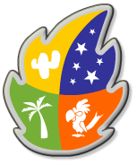

- How do I advance in ekoloko?
The best way to advance in ekoloko is to complete quests and play games. The quests are initiated by the characters of the world. Any character in the world that has a question mark icon over its head has a new quest for you. Click on the characters, get the quests, complete them and come back for the rewards. If you have completed all the quests that were available to you and still haven’t moved up a level, check your personal menu Click on the characters, get the quests, complete them and come back for the rewards. If you have completed all the quests that were available to you and still haven’t moved up a level, check your personal menu  for how many points you’re short and earn them by playing the different games in the world. Every game you play will award you activity points. for how many points you’re short and earn them by playing the different games in the world. Every game you play will award you activity points.
|
Games on ekoloko can be divided into three groups: 1 on 1 games, street games that can be played on the world screens (coco-hoops, basketball, etc.), and personal games that are found with the ekoloko residents and can be reached through completing quests. Some games are open for you as early as in level 1 (with Heathcliff and captain Dolphinfin for example) and some will be made available for you as you advance in levels. Any game that you’ve already earned the right to play will remain available for you to use at any time with the ekoloko resident through which you’ve reached the game.
|
1 on 1 games are games you can play versus your friends. 1 on 1 games can be earned through completing quests, and the first game, “Bongo”, will be earned on level 4. If you earn a 1 on 1 game, click a friend you want to play with and then click the games icon. An invitation to play will appear on the left hand corner of the screen. If you still haven’t earned a game, you’re going to have to wait for an invite in the meantime. An invitation to play will appear on the left hand corner of the screen. If you still haven’t earned a game, you’re going to have to wait for an invite in the meantime.
|
- I have no quests available, what should I do?
First check your quest button, The quests that can be made available for you are in the left tab. Click each one of them to see which character can assign them to you. In the middle folder you can find quest that you have not yet completed, What to do if both folders are empty? Play games and earn enough points for you to go to the next level! Once you advance many new quests will be made available to you.
|
- How do I buy in the stores?
Around ekoloko are located many stores. They can be found in the jungle village, in the train station and in Harmony, the desert town and on ekoluna, ekoloko’s moon. In order to buy and sell in the stores: make money (kokos) through quests and games. Find the relevant store and click on whatever object is highlighted in the store (basket, chair, books, counter, etc.). After you’ve clicked on the highlighted object an easy-to-use transaction menu will open for you.
|
- I bought an item of clothing and I can’t wear it. Why?
Part of the clothes and accessories on ekoloko are restricted to certain levels and require a minimal amount of leadership points. If you bought or received an item of clothing and can’t wear it, you’re probably not at the right level yet or you need to gather more leadership points.
|
- Can I chat privately with no one seeing?
The safety and well-being of kids using ekoloko are the most important things to us. To make sure that all ekos are in line with ekoloko rules, the only way to chat privately on ekoloko is through pre defined pokes.
|
- What happens to an eko that doesn’t respect the rules?
Ekos that will not observe the rules and hurt their friend's feeling of safety and well-being will be immediately removed from ekoloko.
|
- What are leadership points and how do I get them?
Leadership points are points that are awarded to you in ekoloko by your friends. Every eko over level 2 has the ability to award and receive leadership points. ekos may award or subtract one leadership point only every 48 hours. Pioneers are able to do so once every 24 hours. Ekos with many leadership points can use cool clothes and objects and further on will have more possibilities available to them, such as becoming team leaders.
|
Pioneers are ekos carefully chosen by Adam Greenleaf to be future leaders in ekoloko. Pioneers have the responsibility to discover and populate new regions and to protect ekoloko, its surroundings and its community.
To support them in this important role, pioneers get:
- The right to discover and populate new regions
- The right to teleport themselves to different screens through the map
- The right to become an eko-ranger
- The right to purchase and put on clothes and accessories that restricted for pioneers
- The right to participate in activities that are open only for pioneers
- The right to give or take off leadership points once every 24 hours
- The right to earn and play new 1on1 games
- The right to be part of the all-time game leaders in ekoloko
To become a pioneer you will need to:
- Pay the membership fees
- Sign the pioneer pledge
- Be willing to discover, tour and populate new areas in ekoloko
- Complete new exciting challenges, quests and adventures
- Be strongly connected to ekoloko and its community
- Complete a set of special quests designed specifically for pioneers
|
 |
|
- What are the signs with names you have to select before entering the world?
The name signs in the entrance to ekoloko are the names of the servers. Each server has exactly the same screens and games, but with different users online. If you want to meet your friends in ekoloko – make sure you are logging in through the same server.
|
- Is it possible to select a language in ekoloko?
Of course! In the login page select your language of choice from the menu below the password window.
|
- Who are the ekoloko Rangers?
The ekoloko Rangers are a group of ekos who have the job of helping new users in ekoloko and making sure the rules of conduct are absorbed. You can spot them by the angel halo their avatars have over their heads. To become an ekoloko ranger you must be level 7 or higher and to prove the will to help newcomers. All pioneers can apply through the scroll icon on the top right hand side of the screen. If you qualify you will be reviewed by the ekoloko welcoming committee, invited to a Ranger meeting and receive your halo.
|
- I noticed kids giving presents on ekoloko, How do I do that?
To give gifts on ekoloko you need to open the personal items menu, pick an item of any kind (clothing, accessory, or recycling item) and click on it while holding the CTRL key down on your keyboard. This will open an easy-to-use gift menu for you. Select the items you want to gift wrap, confirm and your present is out in the world.
|